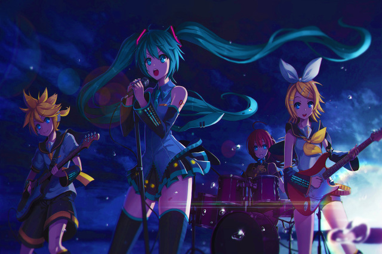

Мику Хацунэ или Хацунэ Мику (яп. 初音ミク), — японская виртуальная певица, созданная компанией Crypton Future Media 31 августа 2007 года. Для синтеза её голоса используется технология семплирования голоса живой певицы с использованием программы Vocaloid компании Yamaha Corporation. Голосовым донором послужила японская сейю Саки Фудзита. Оригинальный образ был создан японским иллюстратором KEI Garou, также работавшим над внешностью других вокалоидов для Crypton Future Media. Диски с песнями Мику завоевывали первые позиции в японских чартах. Она является самым известным и популярным вокалоидом и стала поп-идолом. Также, благодаря технологии псевдообъемной проекции на полупрозрачный экран, она даёт и живые концерты. На её страницу в Facebook подписано свыше 2,5 миллиона пользователей.
Личные данные
Мику Хацунэ 16 лет, при росте 1 м 58 см она весит 42 кг. Цветом её волос являются бирюзовый. Мику иногда изображают с луком-батуном, который стал её отличительным атрибутом.
Игры
Образ Мику активно используется в играх. Впервые в играх Мику появилась в игре 13-sai no Hello Work DS для Nintendo DS, где она выступает одной из героинь. 22 мая 2008 она появилась в японской версии сетевой многопользовательской игры PangYa. В игре Yakuza 5 для PlayStation 3 можно найти снежные скульптуры Мику по всему городу, её игрушку можно выиграть в игровом автомате. А играя за Харуку, есть возможность одеть её в костюм Мику и поучаствовать в танцевальных битвах В игре 7thDragon 2020 II ещё и выступает в роли NPC, таинственной певицы, под прозвищем «Hatsune Miku Type 2021».
Музыка
Американский певец Фаррелл Уильямс сделал ремикс на популярную песню Мику, «Last night, Good night», написанную Livetune.
В марте 2014 года, Crypton Future Media совместно с японской рок-группой BUMP OF CHICKEN, записали музыкальный видео клип под названием «Ray» («Луч»). В нём Мику в режиме реального времени пела совместно с живыми исполнителями. Клип был опубликован на их официальном YouTube-канале 6 марта 2014 года. Также был выпущен концертный клип, снятый во время выступления группы в Tokyo Dome, где Мику появилась на экране в огромном кристалле и снова спела дуэтом с вокалистом BUMP OF CHICKEN. Мировой тур Miku EXPO 2016: сначала Япония, теперь США, Мексика, а затем Китай!
